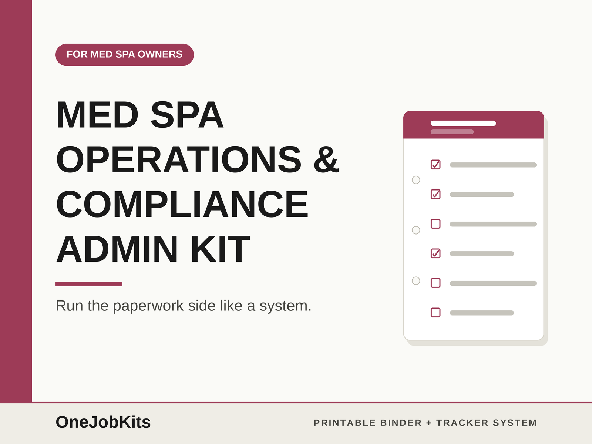

OneJobKits · Kit #9
Med-Spa Compliance & Operations Kit — med spa SOP templates

If you searched for med spa SOP templates, you probably already know the uncomfortable truth about inspections: an inspection does not care how good your treatments are. It cares about paperwork — written safety programs, training records, credential files, logs — complete, current, and findable in minutes.
This page gives you the starter piece free, right here: one month of the audit checklist system. Below it is the full kit it comes from — the administrative backbone of a med spa: the OSHA and HIPAA document packs, a staff credential tracker that flags expiries before they lapse, consent form shells, the operations logs, and a monthly self-audit rhythm that keeps the whole binder alive. It is built for owners and practice managers — the business side of the clinic. It contains no clinical content of any kind, and it is not legal, medical or regulatory advice.
Free download — start with the Med Spa Paperwork Starter
The Med Spa Paperwork Starter is a 4-page fillable PDF: one month of the monthly audit checklist (the documents to check, expiries to verify and logs to file), its follow-up table, and the credential-tracker mini sheet. Run one month through it and you will know exactly what shape your paperwork is in.
Download the free Med Spa Paperwork Starter (PDF)Get it on Gumroad instead
What the starter does not do: it checks one month. The full kit below is the whole system — the documents themselves, the full trackers behind the mini sheet, all twelve monthly checklists, and the setup guide that assembles everything into an 8-section compliance binder with a first-30-days order of work.
What's inside the full kit
- OSHA written-program template pack (Word + fillable PDF) — Bloodborne Pathogens Exposure Control Plan template, Hazard Communication Program template and Emergency Action Plan template, with bracketed fill-in prompts, state-variation prompt boxes and review & approval blocks
- HIPAA documentation set (Word + fillable PDF) — privacy policy template, security policy template, staff confidentiality agreement (signable), breach-incident log form, documentation-retention tracker, client request log, access control list and device inventory
- Staff Credential & Training Tracker (spreadsheet, 5 tabs; Excel + Google Sheets) — Staff Roster · Licences & Certifications, with days-left and status calculated from each expiry date · Training Log, with next-due dates and total hours · Renewal Calendar — the 12-month view, counts plus detail · Vendor & Credentialing Files index
- Forms Pack (fillable PDF) — client intake shell, treatment consent shell, photo/video consent, policy acknowledgement and incident report. The consent shell carries no procedure wording: risks, benefits and alternatives fields are blank for your clinic's medical-director-approved text
- Logs workbook (spreadsheet, 4 tabs) — Product Inventory with stock and expiry flags · Controlled-Substance Count Log with the ending count and any discrepancy calculated · Equipment Maintenance Log with status and cost total · Cleaning Log shell
- Monthly Audit Checklists (fillable PDF) — a cover plus 12 monthly checklists: 10 core checks every month plus 2 rotating focus checks, with a follow-up box and sign-off per month
- Setup Guide (PDF, 10 pages) — the file map, the 8-section binder assembly order, tracker setup, roles, the monthly and annual workflows, how to run the professional review, version control, and a first-30-days setup checklist
- Pro ($349) adds: the Startup Module (clinic-level and people-level licensing tracker pages, credentialing-file checklist, room-setup checklists — documentation points only — and vendor & credentialing file checklists with a vendor status table) and the Credential Tracker PRO with a 6th tab, Licence Applications (application status plus a fees-paid total)
A filled example — so you can see the finished thing
The tracker is easiest to understand in a working month. This sample month belongs to a fictional clinic — call it Glowhaus Aesthetics — and every name and date is invented; what is real is what the sheets calculate from entries like these:
| From the sample month | What the system shows |
|---|---|
| Licences & Certifications | An RN licence with 23 days left is flagged by the sheet's status calculation — in the monthly checklist, not discovered at renewal. A laser certification already renewed shows its next due date a year out |
| Training Log | Two staff complete bloodborne-pathogens refreshers; their next-due dates roll forward automatically and the hours add to the training totals |
| Renewal Calendar | The year view counts what falls due month by month, so the quarter with four renewals is visible — and budgeted — in January |
| Monthly Audit Checklist | 10 core checks plus the month's 2 rotating focus checks, each signed off, with one follow-up item carried into next month's box |
That is the shape of the whole system: dates entered once, flags calculated for you, and a monthly rhythm that asks "what expires, what's missing, what's next" before an inspector does.
Who it is for
Owners and practice managers of single-location med spas and aesthetic clinics — and clinicians opening their first clinic — who need the paperwork system in place before the doors open and kept current after: documents, credentials, forms, logs and the monthly audit habit, in one binder.
Who it is not for
Anyone looking for clinical guidance: there are no protocols, dosing or treatment instructions in here, by design. It also does not make any practice "compliant" by itself — it organises your documentation; your medical director and your healthcare attorney decide what your clinic's documents must say.
Questions buyers ask
- Does this kit make my clinic compliant?
- No — and it says so in every file. These are administrative templates and organisers: they organise your documentation into the shape inspectors and auditors ask for, but compliance is decided by your state's rules, your medical director and your healthcare attorney. Every document carries the footer: template only — review and approval by your medical director and healthcare attorney required before use.
- Are there clinical protocols, dosing or treatment instructions in it?
- None. No clinical protocols, no dosing information, no treatment instructions and no medical advice of any kind. Even the treatment consent form is a shell: the risks, benefits and alternatives fields are deliberately blank for your clinic's own medical-director-approved wording. This kit is the business side of the clinic, not the treatment room.
- How does the credential tracker warn us before something expires?
- You enter each licence, certification and training date once. The tracker calculates days left and status from the expiry date, flags what is due, keeps a training log with next-due dates and total hours, and builds a 12-month renewal calendar — counts plus detail — for the year you set. The warning comes from your own dates, checked monthly against the audit checklist.
- Word, PDF or spreadsheet — what formats do I get?
- All three, matched to the job: the OSHA and HIPAA documents come as editable Word files with fillable-PDF companions, the credential tracker and logs are spreadsheets in Excel and Google Sheets formats, and the forms pack and monthly audit checklists are fillable PDFs. Templates carry bracketed fill-in prompts and state-variation prompt boxes throughout.
- What do we do with the templates before using them?
- Fill in your clinic's own details where the brackets are — every bracket must be replaced — then have the completed documents reviewed and approved before use; sign-off blocks are built into the documents, and the setup guide includes how to run that professional review. Rules and medical-director requirements differ by state and change over time.
- We are opening our first clinic — what does Pro add?
- The Startup Module: clinic-level and people-level licensing tracker pages, a credentialing-file checklist, room-setup checklists (documentation points only), and vendor & credentialing file checklists with a vendor status table — plus a sixth tracker tab, Licence Applications, which tracks each application with its status and a fees-paid total.
- What does the free starter cover, and what does the full kit add?
- The free starter is 4 fillable pages: one month of the audit checklist with its follow-up table, plus the credential-tracker mini sheet — one month, checked. The full kit is the whole year and the whole binder: both document packs, the full credential tracker, the forms pack, all the logs, all 12 monthly checklists and the setup guide that assembles them into an 8-section compliance binder.
Prices
Standard: $249 · Pro: $349 — one-time payment, digital download. No subscription; the files are yours.
Can't find the kit you need?
We build it. Ask us — first asker gets it at half the shelf price. Tell us the job at onejobkits.com and we will build the kit for it.
Related kits
Please know: these are administrative templates and organisers only — not legal, medical, or regulatory advice, and they do not make any practice compliant by itself. This kit contains no clinical protocols, no dosing information, no treatment instructions and no medical advice of any kind. Every document must be reviewed and approved by your medical director and healthcare attorney before use. All example data is fictional (Glowhaus Aesthetics and its staff are invented, and the sample says so).